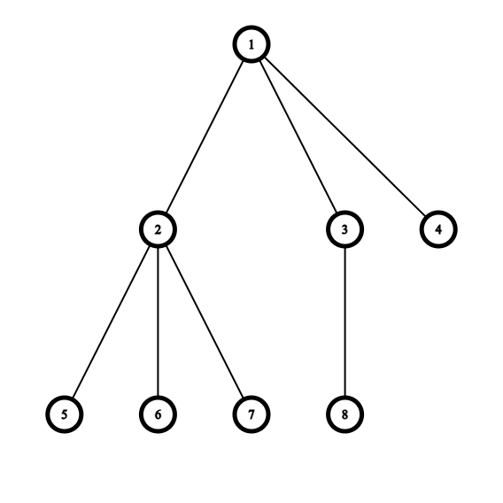
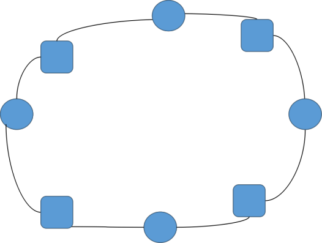
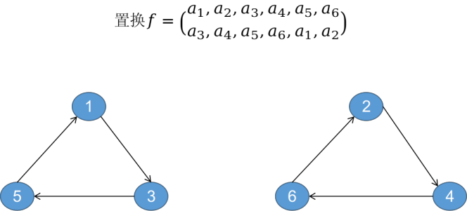

题意
给一颗 n n n m m m m o d 1 0 9 + 7 \bmod 10^9+7 m o d 1 0 9 + 7
m ≤ 1 0 9 , 3 ≤ n ≤ 1 0 5 m\le 10^9,3\le n\le 10^5
m ≤ 1 0 9 , 3 ≤ n ≤ 1 0 5
题解
基环树一个重要的特征是环，考虑先算出环上每个点对应子树的染色方案数。
其中要判断两颗子树是否同构，需要树哈希 ：

按照 dfs 序可以将树上结点对应到序列上，在序列上填上对应结点的深度，如上图得到序列为:
1 2 3 3 3 2 3 2 \begin{array}{c}
1&2&3&3&3&2&3&2
\end{array}
1 2 3 3 3 2 3 2
显然，根据序列可以还原出形态唯一的树。那么树哈希便转换成了序列上的哈希。具体的，需要递归处理，记 h a s h ( u ) hash(u) h a s h ( u ) u u u h a s h ( u ) = d e p u hash(u)=dep_u h a s h ( u ) = d e p u v v v h a s h ( u ) ′ = h a s h ( u ) × b a s e s i z v + h a s h ( v ) hash(u)'=hash(u)\times base^{siz_v}+hash(v) h a s h ( u ) ′ = h a s h ( u ) × b a s e s i z v + h a s h ( v ) b a s e base b a s e s i z v siz_v s i z v v v v
如果交换子树的顺序算同构，把 u u u
如果要判断两个不同深度的子树是否同构，把深度换成高度（到最深叶子结点的距离）；
对于无根树，以重心为根，如果重心有两个，分别判断。
该树哈希冲突的概率与序列哈希是一样的，别作死自然溢出就行了。
回到这题，有根树，交换子树的顺序算同构。设 f [ u ] f[u] f [ u ] u u u u u u
f [ u ] = m × ∏ v ∈ s o n u f [ v ] f[u]=m\times\prod_{v\in son_u} f[v]
f [ u ] = m × v ∈ s o n u ∏ f [ v ]
对于互不同构的子树，显然方案数相乘。考虑现有 c c c h h h ( h + c − 1 c ) \binom{h+c-1}{c} ( c h + c − 1 )
考虑给 h h h [ 1 , h ] [1,h] [ 1 , h ] i i i a i a_i a i 1 ≤ a 1 ≤ a 2 ≤ ⋯ ≤ a c ≤ h 1\le a_1\le a_2\le \dots\le a_c\le h 1 ≤ a 1 ≤ a 2 ≤ ⋯ ≤ a c ≤ h x i = a i − a i − 1 x_i=a_i-a_{i-1} x i = a i − a i − 1 x 1 = a 1 − 1 , x c + 1 = h − a c x_1=a_1-1,x_{c+1}=h-a_c x 1 = a 1 − 1 , x c + 1 = h − a c ∀ x i ≥ 0 \forall x_i \ge 0 ∀ x i ≥ 0 x 1 + x 2 + ⋯ + x c + 1 = h − 1 x_1+x_2+\dots+x_{c+1}=h-1 x 1 + x 2 + ⋯ + x c + 1 = h − 1
进一步 ( x 1 + 1 ) + ( x 2 + 1 ) + ⋯ + ( x c + 1 + 1 ) = h + c , ∀ ( x i + 1 ) ≥ 1 (x_1+1)+(x_2+1)+\dots+(x_{c+1}+1)=h+c\quad,\forall(x_i+1)\ge1 ( x 1 + 1 ) + ( x 2 + 1 ) + ⋯ + ( x c + 1 + 1 ) = h + c , ∀ ( x i + 1 ) ≥ 1
插板法得到 ( h + c − 1 c ) \dbinom{h+c-1}{c} ( c h + c − 1 )
以上我们解决了树上的问题，现在只剩下一个 环 ，环上每个点有两个值： h a s h [ u ] hash[u] h a s h [ u ] f [ u ] f[u] f [ u ] 本质不同 染色方案数，用到 Burnside 引理 ，显然这篇博客讲的好
\begin{split}
|X/G|&=\frac 1{|G|}\sum_{g\in G}|x^g|\\
等价类个数&=每个置换种不动元个数的和 \div 置换群大小
\end{split}
先来解释一下上述名词的定义：
置换：可以理解为一对一的映射，在这到题里就是旋转特定的角度（置换是对于元素的）
置换群：所有置换的集合
等价：对于两个元素，如果 x x x y y y x x x y y y
等价类：于 x x x
置换的不动元：经过这个置换，不发生改变的元素
值得一提的是，在这一题里，元素就是染色方案。
在这道题中，一个合法的置换（旋转）一定满足旋转完之后，同构的树一一对应。那么我们定义一棵基环树的旋转单位 为环上一段长度为 l e n len l e n 相等的 n l e n \dfrac{n}{len} l e n n l e n len l e n
如下图，用相同形状表示同构子树：

则该基环树的旋转单位 就是 2 2 2 g g g
旋转单位 l e n len l e n l e n len l e n n l e n \dfrac{n}{len} l e n n n n n
接下来，我们考虑旋转 k k k 轨道 这一概念
轨道：如果把置换看作一张有向图，那么一个轨道就可以生动地理解为一个 环
例如下图的置换，就有两个轨道。

对于一个有 d d d g d g^d g d
考虑旋转 k k k k k k i i i i + k i+k i + k i i i
设 t t t t t t t ⋅ k ≡ 0 ( m o d n ) t\cdot k\equiv 0 \pmod{n} t ⋅ k ≡ 0 ( m o d n ) t t t t t t t = l c m ( k , n ) n t = \dfrac{\mathrm{lcm}(k,n)}{n} t = n l c m ( k , n ) d = n t = gcd ( n , k ) d = \dfrac{n}{t} = \gcd(n,k) d = t n = g cd( n , k )
就这样，我们就求出了每个置换的不动元个数，那么问题就迎刃而解了。
CODE
代码有点小长。
CODE
1 2 3 4 5 6 7 8 9 10 11 12 13 14 15 16 17 18 19 20 21 22 23 24 25 26 27 28 29 30 31 32 33 34 35 36 37 38 39 40 41 42 43 44 45 46 47 48 49 50 51 52 53 54 55 56 57 58 59 60 61 62 63 64 65 66 67 68 69 70 71 72 73 74 75 76 77 78 79 80 81 82 83 84 85 86 87 88 89 90 91 92 93 94 95 96 97 98 99 100 101 102 103 104 105 106 107 108 109 110 111 112 113 114 115 116 #include <bits/stdc++.h> #define ll long long #define int long long #define P pair<ll,ll> #define fi first #define se second using namespace std;const int mod=1e9 +7 ,N=1e5 +5 ;const ll moh=1019260817 ,bas=134243 ;int qpow (int x,int y,ll p) int res=1 ; for (int i=0 ;(1ll <<i)<=y;++i,x=1ll *x*x%p) if (y&(1ll <<i)) res=1ll *res*x%p; return res; } int n,m,far[N],deg[N],onc[N];ll hac[N],res; vector<int > cir,g[N]; P c[N]; namespace topu{ int in[N]; void rmain () { memset (onc,0 ,sizeof queue<int > Q; memcpy (in,deg,sizeof for (int i=1 ;i<=n;++i) if (!in[i]) Q.push (i); while (!Q.empty ()) { int u = Q.front (); Q.pop (); if (--in[far[u]] == 0 ) Q.push (far[u]); } for (int i=1 ;i<=n;++i) if (in[i]) { for (;!onc[i];i=far[i]) onc[i]=1 ,cir.push_back (i); break ; } } } namespace on_tree{ int siz[N],dep[N],sta; ll hash[N],dp[N],po[N],inv[N],pi[N]; bool cmp (int x,int y) return hash[x] < hash[y];} void init () po[0 ]=1 ; for (int i=1 ;i<=n;++i) po[i] = po[i-1 ]*i%mod; pi[0 ]=bas; for (int i=1 ;i<=n;++i) pi[i] = pi[i-1 ]*bas%moh; inv[n] = qpow (po[n],mod-2 ,mod); for (int i=n-1 ;i>=0 ;--i) inv[i]=inv[i+1 ]*(i+1 )%mod; } void dfs (int u,int fa) { siz[u] = 1 ; for (int i=0 ;i<(int )g[u].size ();++i) { int v=g[u][i]; if (onc[v] || v==fa) continue ; dep[v] = dep[u]+1 ; dfs (v,u); siz[u] += siz[v]; } sort (g[u].begin (),g[u].end (),cmp); hash[u] = dep[u]%moh; dp[u] = m; int cnt=1 ,lst=-1 ; for (int i=0 ;i<(int )g[u].size ();++i) { int v=g[u][i]; if (onc[v]) continue ; hash[u] = (hash[u]*pi[siz[v]]+hash[v])%moh; if (lst > 0 ) { if (siz[v]!=siz[lst] || hash[v] != hash[lst]) { for (int j=0 ;j<cnt;++j) dp[u] = dp[u]*(dp[lst]+j)%mod; dp[u] = dp[u]*inv[cnt]%mod; cnt=1 ; } else ++cnt; } lst = g[u][i]; } if (lst < 0 ) return ; for (int j=0 ;j<cnt;++j) dp[u] = dp[u]*(dp[lst]+j)%mod; dp[u] = dp[u]*inv[cnt]%mod; } P rmain (int u) { dep[u]=1 ; sta=u; dfs (u,0 ); return P (dp[u],hash[u]); } } int gcd (int x,int y) return !y?x:gcd (y,x%y);}signed main () cin >> n >> m; for (int i=1 ;i<=n;++i) { scanf ("%lld" ,&far[i]); deg[far[i]]++; g[far[i]].push_back (i); } on_tree::init (); topu::rmain (); int sz = cir.size (); for (int i=0 ;i<sz;++i) { c[i] = on_tree::rmain (cir[i]); } int mp; for (int i=1 ;i<=sz;++i) if (sz%i == 0 ) { int ok=1 ; for (int j=0 ;j<sz;++j) if (c[j].se != c[(j+i)%sz].se) ok=0 ; if (ok) {mp=i;break ;} } ll Mul = 1 ; for (int i=0 ;i<mp;++i) Mul = Mul*c[i].fi%mod; ll ans = 0 ; for (int i=0 ;i<sz/mp;++i) { int g=gcd (i,sz/mp); ans = (ans+qpow (Mul,g,mod))%mod; } cout << ans*qpow(sz/mp,mod-2,mod)%mod <<"\n"; return 0 ; }